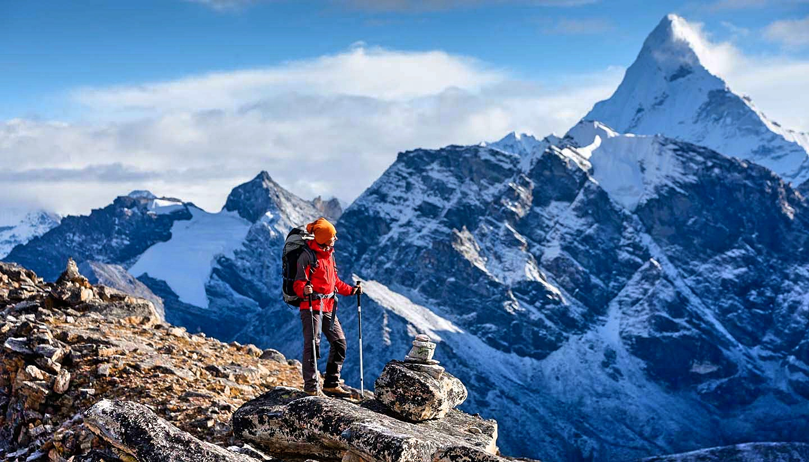

1.Norway

From hip urban cities to glittering fjords, northern lights, and remote villages above the Arctic Circle – Norway is a veeery long country, packed with things to see and do. So, where do you start? To get the most out of your holiday, we recommend that you choose one or two regions to explore. Here are some of the highlights!
Seasons and climate in Norway
Due to the temperate waters of the Gulf Stream, Norway has a much milder climate than other parts of the world at the same latitude. The coldest areas in the winter are often inland or far to the north.
In general, the coastal areas usually have relatively mild winters while the inland parts have cold winters with plenty of snow, and hot and relatively dry summers, especially in the eastern parts of the country.
2.Nepal

Nepal’s ancient history began in the Kathmandu Valley and over the centuries its boundaries grew to include tracts of what today are neighboring countries such as India and China. It prospered as a crossroad resting place for two trade routes. As such, it became a cultural mixing pot.The most mountainous part of Nepal in the north contains eight of the earth’s ten tallest mountains, including its most famous, Mount Everest. Mount Everest stands above all others at 8,848 meters (5.5 miles) above sea level. It is called Sagarmatha (“Forehead of the Sky”) by the Sherpas.
Seasons and climate in Norway
Nepal is known for its high-altitude mountain treks and snow-covered peaks. It's actually a very climatically diverse country, and many would-be visitors are surprised by just how hot and tropical much of it is.
Broadly speaking, Nepal's climate can be divided into four distinct regions and four seasons. When planning a trip to Nepal, it's important to factor in the season, the regions you'll be traveling to, and the altitude. It's also important to consider the activities you want to experience and when the best times to do them are. If you're an inexperienced hiker, then heading into the mountains in the middle of winter is not a good idea, although if you've done winter treks before and are well prepared with the right gear, then even winter treks can be fun. Likewise, if your trip coincides with the monsoon season, you need to know how the conditions will affect your plans and what might not be possible.